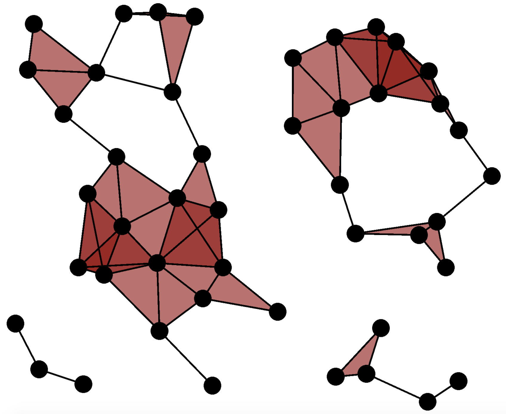

Back to Adam's site

One of the most common "thickenings" of a point cloud that is used in toological data analysis is the following, because of its computational efficiency:
Definition. For a finite metric space \(X\), and a scale parameter \(r > 0\), the Vietoris-Rips Complex (or simply, VR Complex), denoted by \(VR(X;r)\) is the complex that contains a finite simplex \(\sigma \subseteq X\) whenever diam\((\sigma) < r.\)
|  |
Here we make three important remarks about VR Complexes:
Remark 1. For every scale parameter \(r \ge 0\), the complex \(VR(X;r)\) is simplicial. That is, it satisifes the properties: (1) If \(\sigma\) is in \(VR(X;r)\) and if \(\tau\) is in \(\sigma\), then \(\tau\) is in \(VR(X;r)\), and (2) If \(\sigma\) and \(\tau\) are in V\(R(X;r)\), then \(\sigma \cap \tau\) is in \(VR(X;r)\).
Remark 2. For any scale parameters \(r' \ge r > 0\), the natural inclusion map \(VR(X;r) \to VR(X;r')\) is a homotopy equivalence. That is, any inceasing sequence of scale parameters gives rise to an increasing sequence of simplicial complexes, called a VR simplicial filtration.
Remark 3. The complex \(VR(X;r)\) depends only on pairwise distances in \(X\). That is, \(VR(X;r)\) is equal to the clique complex of its 0-dimensional and 1-dimensional simplices.
Remarks 1 and 2 are necessary in a technical sense because they prove that one can examine the persistent homology the point cloud. Remark 3 is important because it allows us to use general tools about clique complexes to provide insight into VR complexes. Moreover, Remark 3 gives us an optimization for storing the combinatorial object \(VR(X;r)\) in a computer program.
 |
The importance of the VR simplicial filtration is solidified by an important theorem, proving that the resulting persistent homology barcodes from a VR simplicial filtration are "stable".
Theorem. For \(M\) a compact metric space and \(X \subseteq M\) a finite subspace, if \(X\) converges to \(M\) in the Gromov-Hausdorff distance, then \(PH(X)\) converges to \(PH(M)\) in the bottleneck distance.
One often likes to imagine that a point cloud \(X\) was created through a (noisy) sampling from a manifold \(M\). However, there are very few infinite, continuous spaces \(M\) for which the barcodes \(PH(M)\) are known. Towards this end, we were able to compute \(PH(M)\) for \(M = P_n\) the boundary of any regular polygon, equipped with the Euclidean metric of the plane.